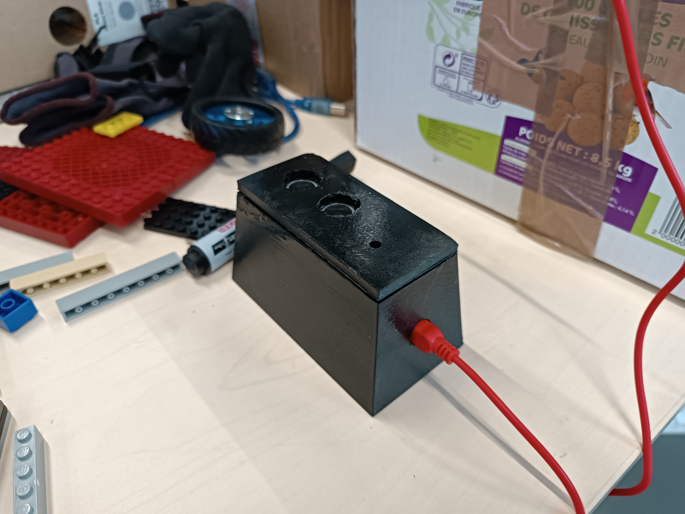
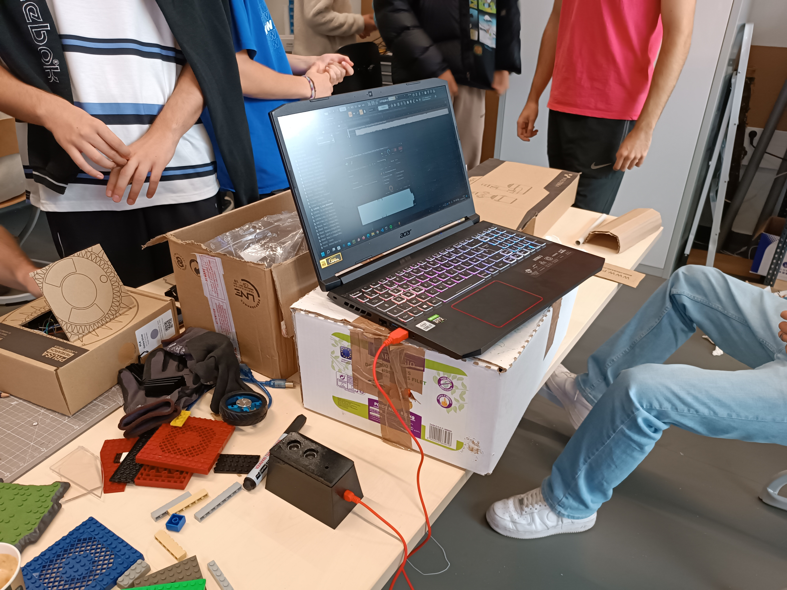
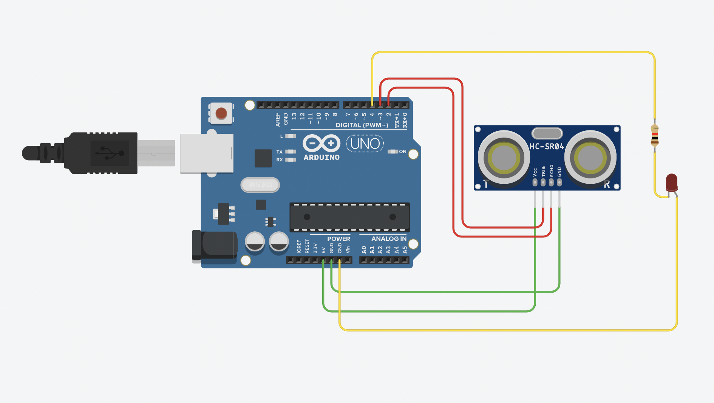

Magic Knob
Création d'objet connecté MIDI
Avec deux camarades de classe, j'ai conçu un object connecté assez sympathique :
En MAO (Musique Assistée par Ordinateur), on utilise souvent des contrôleurs MIDI pour interagir avec les instruments virtuels. Le protocole étant assez simple, (valeurs entre 0 et 127), il est assez aisé d'en créer un.
Le Magic Knob est équipé d'un capteur de distance relié à une carte Arduino. Il convertit la distance de la main en valeur MIDI. On peut contrôler le volume, l'égalisation et bien d'autres choses simplement avec sa main
Prenez des cartes et des capteurs et amusez vous !
Nous nous sommes effectivement bien amusé sur ce projet, entre coder en C++, découvrir l'électronique et l'impression 3D, ce projet est l'un de mes préférés !
